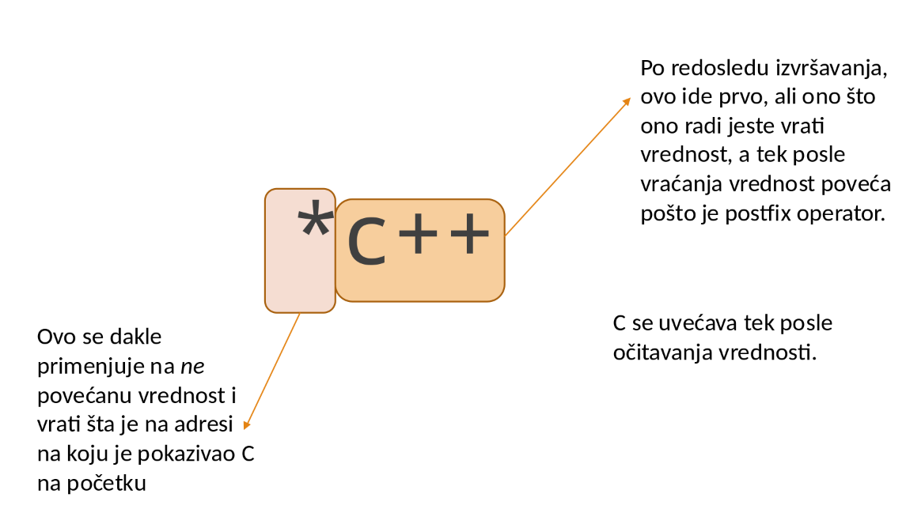

Veljko Petrović
Februar, 2023
position.set() bude na raspolaganju samo obrađivaču prekida koji u okviru operativnog sistema registruje izmene pozicije kursora.position.get() bude na raspolaganju procesima iz korisničkog sloja.position.get() proces bude prekinut radi obrade prekida, koja poziva operaciju position.set().position.get() a pre izvršavanja drugog iskaza dodele iz njenog tela, tada će rezultat izvršavanja ove operacije biti pogrešan.list.link() i list.unlink() na raspolaganju samo modulu za rukovanje datotekama i neka se pozivaju iz operacija ovog modula.list.unlink() bude pokrenuto u toku aktivnosti niti nekog procesa u modulu za rukovanje datotekama.unlinkedunlinked = firstlist.unlink().unlinked.list.unlink(), je štetno. Isto važi i za preplitanje izvršavanja operacija list.link() i list.unlink() kao i list.link() i list.link()put() celog bafera, kao i pražnjenje: get() celog bafera.
buffer.put() poziva nit proizvođač.buffer.get() poziva nit potrošač.buffer.put().buffer.get() bude pozvana u toku aktivnosti potrošača, tada postoji mogućnost da potrošač preuzme sadržaj delimično popunjenog bafera.Choosing i Numberbool choosing[NUM_THREADS] = {false};
int number[NUM_THREADS] = {0};
void lock(int i){
choosing[i] = true;
number[i] = 1 + max(number);
choosing[i] = false;
for(int j = 0; j < NUM_THREADS; j++){
while(choosing[j]);
while
(
(number[j] != 0) &&
(
(number[j] < number[i]) ||
(number[j] == number[i] && j < pid)
)
);
}
}“The CMPXCHG (compare and exchange) and CMPXCHG8B (compare and exchange 8 bytes) instructions are used to synchronize operations in systems that use multiple processors. The CMPXCHG instruction requires three operands: a source operand in a register, another source operand in the EAX register, and a destination operand. If the values contained in the destination operand and the EAX register are equal, the destination operand is replaced with the value of the other source operand (the value not in the EAX register). Otherwise, the original value of the destination operand is loaded in the EAX register.”
“The status flags in the EFLAGS register reflect the result that would have been obtained by subtracting the destination operand from the value in the EAX register. The CMPXCHG instruction is commonly used for testing and modifying semaphores. It checks to see if a semaphore is free. If the semaphore is free, it is marked allocated; otherwise it gets the ID of the current owner. This is all done in one uninterruptible operation. In a single-processor system, the CMPXCHG instruction eliminates the need to switch to protection level 0 (to disable interrupts) before executing multiple instructions to test and modify a semaphore. For SMP systems, CMPXCHG can be combined with the LOCK prefix to perform the compare and exchange operation atomically.”
threadthreadthread kojoj prosledimo funkciju koja će biti telo nitijoin i detachjoin i detachmain terminira (zajedno sa programom) dok nam se sve niti nisu završile.main niti.mutex je mehanizam koji omogućava da kontrolišemo koliko niti mogu biti u nekoj ključnoj sekciji kodacondition_variable.wait nad condition_variable instancom..wait prima lock pod kojim smo trenutno i oslobađa ga dok čekamo da ne bi blokirali ceo program tako što čekamo pod bravom.notify ili .notify_all gde prva otkoči nit koja najduže čeka na uslov, a druga otkoči sve.struct List_member {
List_member* next;
char buffer[512];
};
class List {
mutex mx;
List_member* first;
condition_variable nonempty;
public:
List() : first(0) {};
void link(List_member* member);
List_member* unlink();
};
void List::link(List_member* member){
unique_lock<mutex> lock(mx);
member->next=first;
first=member;
nonempty.notify_one();
}void Buffer::put(char* c){
unsigned int i;
unique_lock<mutex> lock(mx);
while (state == FULL)
empty.wait(lock);
for(i = 0; i < BUFFER_SIZE; i++)
content[i] = *c++;
state = FULL;
full.notify_one();
}
void Buffer::get(char* c){
unsigned int i;
unique_lock<mutex> lock(mx);
while (state == EMPTY)
full.wait(lock);
for(i = 0; i < BUFFER_SIZE; i++)
*c++ = content[i];
state = EMPTY;
empty.notify_one();
}Message_boxtemplate<class MESSAGE> void Message_box<MESSAGE>::send(const MESSAGE* message){
unique_lock<mutex> lock(mx);
while(state == FULL)
empty.wait(lock);
content = *message;
state = FULL;
full.notify_one();
}
template<class MESSAGE> MESSAGE Message_box<MESSAGE>::receive(){
unique_lock<mutex> lock(mx);
while(state == EMPTY)
full.wait(lock);
state = EMPTY;
empty.notify_one();
return content;
}send() i receive() omogućuju asinhronu razmenu poruka jer se pošiljalac i primalac ne sreću prilikom razmene poruka (aktivnost pošiljaoca se zaustavlja pri slanju poruka samo kada je komunikacioni kanal pun, dok se aktivnost primaoca zaustavlja pri prijemu poruka samo kada je ovaj kanal prazan).